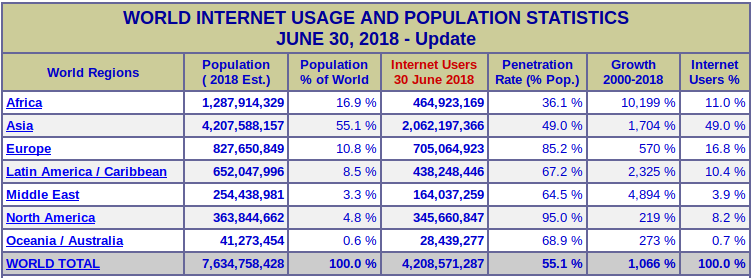
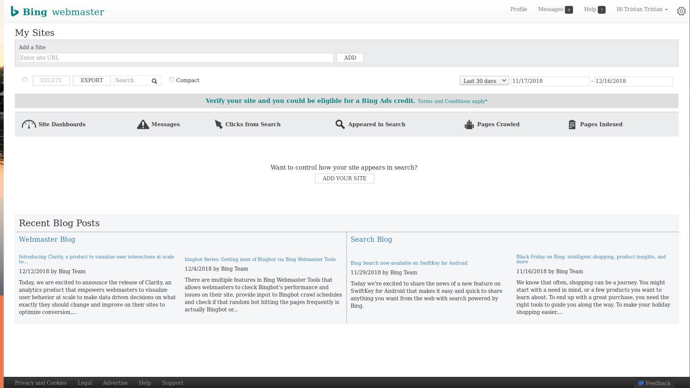
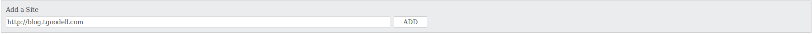

Tristan Goodell on Tutorial, Website | 19 Dec 2018
Simply put, not everyone uses Google as their primary search engine. Although there are contradicting statistics out there about search engine market share, a strong minority still use Bing as their primary search engine. Furthermore, Yahoo search is powered by Bing.
According to netmarketshare.com, Bing has a market share of 4.52%. Yahoo has a market share of 2.39%. While that may not seem like a lot, it is. When 4,208,571,287 people use the internet worldwide, a combined 6.91% is massive! That is an astounding 290,812,275 people!

Besides the obvious reason for reaching more people just through Yahoo and Bing, I also wanted to target more people that use meta search engines like DuckDuckGo and Startpage.
Head over to Bing Webmaster Tools. You will need to sign in/up with a Google, Facebook, or Microsoft account. Annoyingly, you cannot create an account just for the Bing Webmaster Tools. If you click "Sign Up", you are prompted with the same message as if you clicked "Sign In".
Once you complete the Sign In/Up process, you will be greeted with a screen like this:

Simply add a site in the box as shown below and click "Add".

You will then be greeted with a page asking for information ranging from a sitemap to your industry type.
Next, you will have to verify that you actually own the site. You will be greeted by three options for verification:
Placing an XML file on your web server.
Add a tag to your default webpage (i.e https://tristangoodell.com)
Add a CNAME record to your DNS.
All three are fairly self-explanatory. Choose whichever one you prefer.
There is a massive list of customizability options here. These include:
Sitemaps: list a sitemap to be crawled.
Ignore these URL Parameters: to remove duplicate page queries
Crawl Control: the time of day Bing should crawl your site.
Deep Links: prevent URLs from appearing as deep links in Bing search results.
Block URLs: prevent certain URLs from being indexed.
Disavow Links: tell Bing about links that point to your site that you do not trust.
Geo-Targeting: Target a specific country with pages or the entire site.
Verify Ownership: verify that you actually own the property (this was already done).
Connected Page: connect related web presences such as social media to your site and search results.
Users: grant new users permissions to view and edit Bing Webmaster Tools for your website.
Page Traffic: view the top pages from organic search results.
Page Mobile Friendliness: ensure that your pages are mobile friendly.
Index Explorer: see how Bing sees your site.
Search Keywords: view the keywords associated with your site in search results.
SEO Reports: bi-monthly reports for whether or not your site is in compliance with SEO best practices.
Inbound Links: a list of external websites that have pointed to your content.
Crawl information: view crawl errors and other data from the latest crawl.
Mobile Friendliness Test: a simple test to determine whether or not your site is mobile friendly.
Keyword Research: determine what volume of searches origenate from a certain phrase.
Fetch as Bingbot: view crawl data from Bingbot.
Markup Validator: display errors when markup code is incorrect or i the wrong place.
SEO Analyzer: crawl a page and determine if the page uses SEO best practices.
Verify Bingbot: Useful for identifying Bingbot in Analytics.
Site Move: notify Bing for URL changes.
Malware: view Malware-infested URLs associated with your site.
Phishing: view Phishing URLs associated with your site.
Track Certificates: view certificates requested by visitors.
I would not bother with the group Widgets. Likewise, Messages is fairy self-explanatory.
Hope this helped!
Email: contact@tgoodell.com
Mastodon: @tgoodell@mastodon.technology